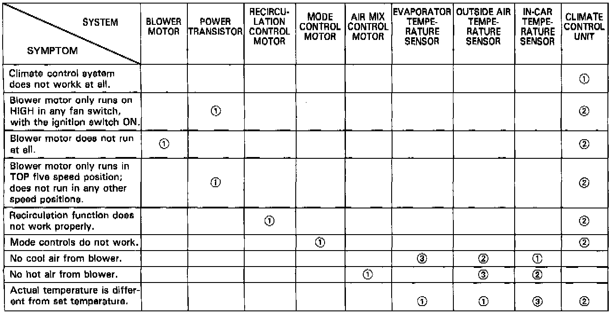
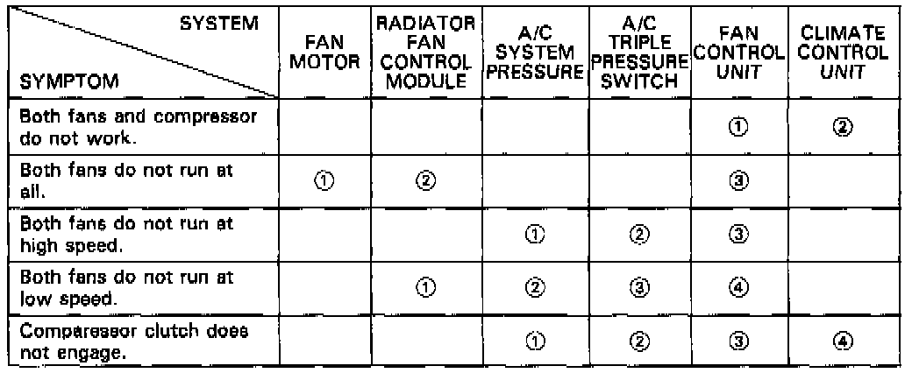

- Symptom Chart


TROUBLESHOOTING REFERENCE CHARTS
- Use these charts if the self-diagnosis checks don't identify any cause for the symptom.
- Across each row in the chart, the potential sources of a symptom are ranked in the order they should be inspected, starting with [1]. Find the symptom in the left column, read across to the most likely source, then refer to the component listed at the top of that column. If inspection shows the component is OK, try component [2], etc.